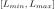
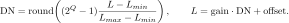

Definition
Chain: mirror and optics collect radiance → filters or prism select the band → detector (transducer) converts EM energy variations into an electrical signal → amplifier → sampling and A/D conversion → DN. Each pixel's DN represents the radiance integrated over its ground cell, spectral band and integration time.
Linear quantization with bits over the range

:
Example
Landsat 8 OLI quantizes at 12 bits (4096 levels, delivered in 16-bit words); Sentinel-2 delivers 16-bit products; older sensors used 8 bits (256 levels).
Intuition
A DN is a measurement in arbitrary units: meaningful within one band of one image, comparable across images only after conversion to radiance or reflectance.
Pitfall
More bits are useless if the noise is larger than one quantization step: should match the radiometric resolution, not exceed it.